CÁC HỘI CHỨNG TIỀN KÍCH THÍCH
Phần 1. Hội chứng tiền kích thích
Hội chứng tiền kích thích, hội chứng Wolff-Parkinson-White, hội chứng Lown-Ganong-Levine, thể Mahaim
Các đường dẫn truyền phụ
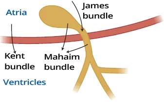
- Về mặt sinh lý, tâm nhĩ được cách điện với tâm thất
- Kết nối điện duy nhất là bộ nối nhĩ – thất (AV junction)
- Nếu bộ nối nhĩ – thất bị gián đoạn, xuất hiện block nhĩ – thất độ III (cách điện hoàn toàn tâm nhĩ với tâm thất)
- 0,5% dân số có thêm một đường dẫn truyền phụ (accessory pathway) bên cạnh bộ nối nhĩ – thất
- Tâm nhĩ và tâm thất được kết nối về điện qua 2 đường:
- Bộ nối nhĩ – thất
- Đường dẫn truyền phụ
- 10% bệnh nhân có đường dẫn truyền phụ còn có thêm một đường dẫn truyền phụ thứ hai
- Đường này thường không hoạt động
- Tâm nhĩ và tâm thất được kết nối về điện qua 2 đường:
- Dựa theo vị trí, có 3 đường dẫn truyền phụ chính:
- Bó Kent
- Nối tâm nhĩ với tâm thất
- (Atrio-Ventricular bypass — đường vòng nhĩ – thất)
- Tạo ra hội chứng WPW
- Bó James
- Nối tâm nhĩ với bó His
- (Atrio-Hisian bypass — đường vòng nhĩ – His)
- Tạo ra hội chứng LGL
- Sợi Mahaim
- Nối bộ nối nhĩ – thất với tâm thất
- (Nodo-Ventricular bypass — đường vòng nút – thất)
- Tạo ra hội chứng Mahaim
- Bó Kent
Hội chứng tiền kích thích
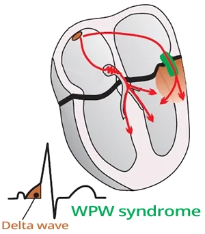
- Về mặt sinh lý, tâm thất được khử cực qua
- Bộ nối nhĩ – thất và hệ thống dẫn truyền
- Hội chứng tiền kích thích (pre-excitation syndrome) nghĩa là
- Tâm thất được khử cực sớm hơn
- Tâm thất bị tiền kích thích qua một đường dẫn truyền phụ
- Đường dẫn truyền phụ thường gặp nhất là bó Kent
- Do đó, hội chứng WPW thường được gọi là
- Hội chứng tiền kích thích (cách gọi này không hoàn toàn chính xác)
- Do đó, hội chứng WPW thường được gọi là
- Có 3 hội chứng tiền kích thích:
- Hội chứng Wolff-Parkinson-White (WPW) - bó Kent
- Hội chứng Lown-Ganong-Levine (LGL) - bó James
- Hội chứng tiền kích thích Mahaim - sợi Mahaim
ECG và hội chứng tiền kích thích
- Các đường dẫn truyền phụ
- Dẫn xung động xuống tâm thất không có chậm trễ (dẫn truyền không giảm dần — non-decremental conduction)
- Tâm thất được khử cực sớm hơn qua đường dẫn truyền phụ
- Các hội chứng tiền kích thích tạo ra:
- Khoảng PR ngắn lại
- Sóng delta
Hội chứng Wolff-Parkinson-White (WPW)
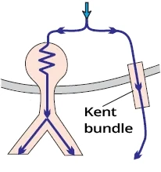
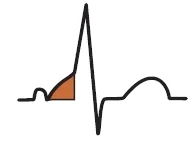
Bó Kent và hội chứng WPW
- Hội chứng WPW có đặc điểm là bó Kent
- Bó này nối tâm nhĩ với tâm thất, đi vòng qua bộ nối nhĩ – thất (đường vòng nhĩ – thất)
- Sóng delta
- Xung động qua bó Kent khử cực tâm thất sớm hơn và làm rộng phần đầu của phức bộ QRS
- Khoảng PR ngắn lại < 0,12 s
- Phần chân giãn rộng của phức bộ QRS dịch về phía sóng P
Hội chứng Lown-Ganong-Levine (LGL)
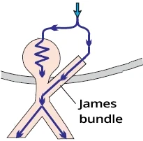
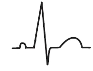
Bó James và hội chứng LGL
- Hội chứng LGL có đặc điểm là bó James
- Bó này nối tâm nhĩ với bó His, đi vòng qua nút nhĩ – thất (đường vòng nhĩ – His)
- Không có sóng delta
- Sóng delta không xuất hiện vì tâm thất được khử cực qua hệ thống dẫn truyền
- Khoảng PR ngắn lại < 0,12 s
- Xung động đi vòng qua nút nhĩ – thất và tới tâm thất nhanh hơn
Hội chứng Mahaim
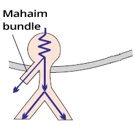
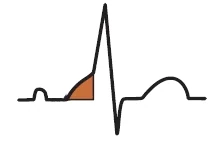
Bó Mahaim và hội chứng Mahaim
- Hội chứng Mahaim có đặc điểm là bó Mahaim
- Bó này nối bộ nối nhĩ – thất với tâm thất, đi vòng qua các nhánh Tawara (đường vòng nút – thất)
- Sóng delta
- Tâm thất được khử cực sớm hơn qua bó Mahaim, tạo ra sóng delta
- Khoảng PR bình thường (0,12 s – 0,20 s)
- Xung động tới bộ nối nhĩ – thất, tại đây nó chậm lại theo sinh lý bình thường
- Rồi tiếp tục đi qua bó Mahaim xuống tâm thất
Đường dẫn truyền phụ ác tính
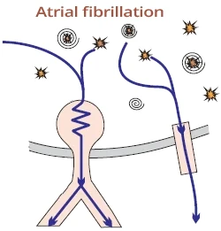
- Đường này có thời kỳ trơ ngắn,
cho phép nó dẫn xung động với tần số cao - Đường dẫn truyền phụ ác tính trong nhịp nhanh trên thất
- Dẫn xung động xuống tâm thất với tần số 200-300/phút.
- Dần dẫn tới rung thất và tim mất chức năng bơm
- Bệnh nhân có hội chứng WPW đối diện nguy cơ từ bất kỳ nhịp nhanh trên thất nào, thường gặp nhất là
- Rung nhĩ
- Cuồng nhĩ
Rung nhĩ và hội chứng WPW
- Xung động đi xuống tâm thất qua đường dẫn truyền phụ
(không bị làm chậm) - Kết quả là nhịp nhanh phức bộ rộng không đều (QRS > 0,12 s)
- Với tần số 200-300/phút.
- Có thể dẫn tới
- Nhát bóp hòa hợp (fusion beat)
- Nhát bóp bắt được (capture beat)
Đường dẫn truyền phụ lành tính
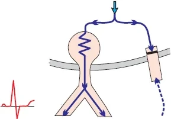
- Đường này có thời kỳ trơ dài, nên không thể dẫn xung động xuống tâm thất với tần số cao
- Trong nhịp xoang, đường này không hoạt động
- Đó là dẫn truyền ẩn (concealed conduction), vì trong đường dẫn truyền phụ, 2 xung động ở giữa trong thời kỳ trơ bị block
- Không có dấu hiệu tiền kích thích trên ECG
- Đường dẫn truyền phụ bộc lộ trong cơn nhịp nhanh
- Khi xuất hiện nhịp nhanh vào lại nhĩ – thất
- Trong nhịp xoang, sóng delta có thể xuất hiện ngắt quãng
(nếu là hội chứng WPW)- Khi một xung động trên thất đi xuống tâm thất qua đường dẫn truyền phụ ngoài thời kỳ trơ
Nhịp xoang
- ECG cho thấy phức bộ QRS hẹp không có sóng delta
- Vì tâm thất chỉ được khử cực qua bộ nối nhĩ – thất
- Xung động trong đường dẫn truyền phụ
- Bị block trong thời kỳ trơ
- ECG cho thấy nhịp xoang không có tiền kích thích
- Đường dẫn truyền phụ bộc lộ trong cơn AVRT
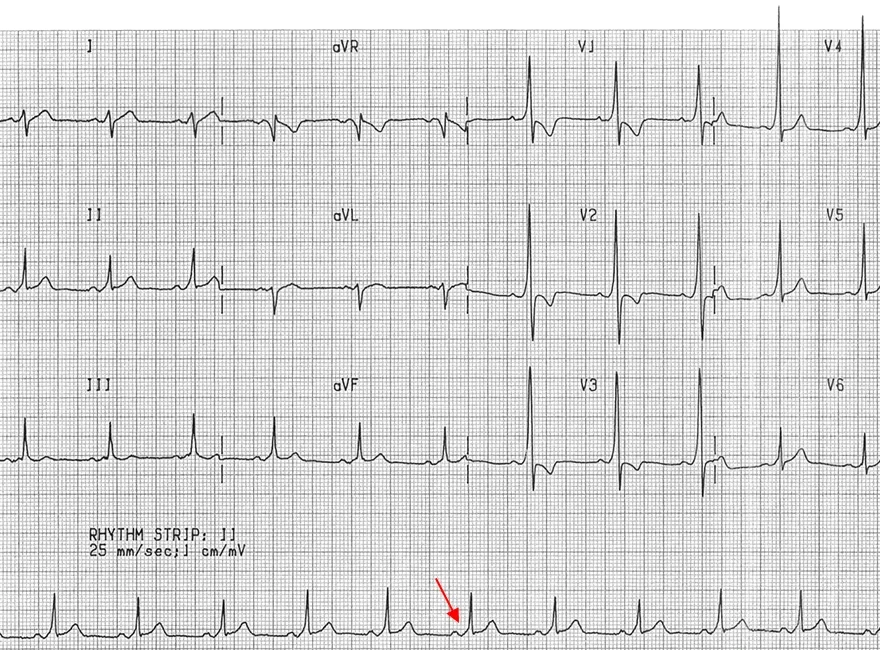
Hội chứng WPW
- Khoảng PQ ngắn lại < 0,12 s
- Sóng delta
- Phức bộ QRS giãn rộng (> 0,12 s)
- Sóng R chiếm ưu thế ở V1-3
- Đây không phải dày thất phải
- Đây là dấu hiệu của hội chứng WPW
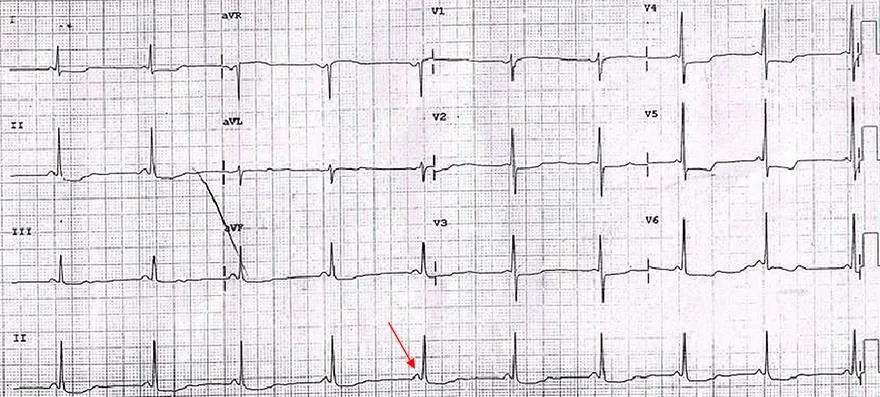
Hội chứng LGL
- Khoảng PQ ngắn lại < 0,12 s
- Không có sóng delta
- Cùng một hình ảnh ECG này còn gặp trong:
- Hội chứng LGL
- Dẫn truyền nhĩ – thất tăng nhanh
(accelerated AV conduction) - Để phân biệt, dùng thăm dò điện sinh lý
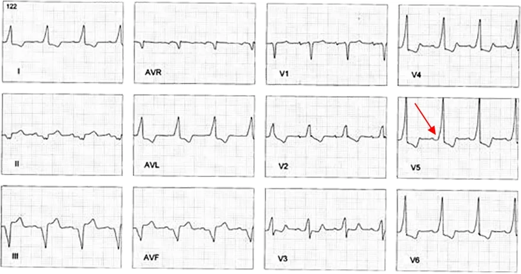
Hội chứng Mahaim
- Khoảng PQ bình thường (0,16 s)
- Sóng delta
- Phức bộ QRS rộng (> 0,12 s)
- Đường Mahaim được xác nhận bằng thăm dò điện sinh lý
- ECG giống block nhánh trái
- Vì đường Mahaim nằm ở thất phải
Phần 2. Hội chứng Wolff-Parkinson-White (WPW)
Hội chứng tiền kích thích, hội chứng WPW, đường vòng nhĩ – thất, hội chứng đường dẫn truyền phụ nhĩ – thất
Hội chứng tiền kích thích
- Về mặt sinh lý, tâm thất được khử cực qua
- Bộ nối nhĩ – thất (AV junction) và hệ thống dẫn truyền
- Hội chứng tiền kích thích (preexcitation syndrome) nghĩa là
- Tâm thất được khử cực sớm hơn
- Tâm thất bị tiền kích thích qua một đường dẫn truyền phụ (accessory pathway)
- Đường dẫn truyền phụ thường gặp nhất là bó Kent
- Do đó, hội chứng WPW thường được gọi là
- Hội chứng tiền kích thích (cách gọi này không hoàn toàn chính xác)
- Do đó, hội chứng WPW thường được gọi là
- Có 3 hội chứng tiền kích thích:
- Hội chứng Wolff-Parkinson-White (WPW) - bó Kent
- Hội chứng Lown-Ganong-Levine (LGL) - bó James
- Hội chứng tiền kích thích Mahaim - bó Mahaim
Hội chứng Wolff Parkinson White (WPW)
- Hội chứng WPW được mô tả lần đầu vào năm 1930 bởi các nhà tim mạch Wolff, Parkinson và White
- Họ nhận thấy bệnh nhân có phức bộ QRS giãn rộng và khoảng PQ ngắn lại thì có cơn AVRT kịch phát
- Bó Kent
- Là kết nối phụ trong hội chứng WPW, nối tâm nhĩ với tâm thất (Atrio-Ventricular bypass — đường vòng nhĩ – thất)
- Khoảng 0,5% dân số có bó này (đây là một bất thường bẩm sinh)
- 10% bệnh nhân có bó Kent còn có thêm một đường dẫn truyền phụ thứ hai
- Đường này thường không hoạt động
- 10% bệnh nhân có bó Kent còn có thêm một đường dẫn truyền phụ thứ hai
- Không làm chậm dẫn truyền xung động như nút nhĩ – thất
- Xung động từ bó Kent tạo ra sóng delta trên ECG
- Bó Kent (và bất kỳ đường dẫn truyền phụ nào) có thể có
- Chỉ dẫn truyền xuôi chiều (antegrade — từ nhĩ xuống thất)
- Chỉ dẫn truyền ngược chiều (retrograde — từ thất lên nhĩ)
- Hoặc dẫn truyền theo cả hai chiều
Sóng delta và hội chứng WPW
- Bó Kent khử cực một tâm thất sớm hơn so với xung động từ bộ nối nhĩ – thất
- Xung động từ bó Kent tạo ra sóng delta trên ECG
- Sóng delta
- Làm rộng phức bộ QRS
- Làm ngắn khoảng PQ
- Nhát bóp hòa hợp (fusion beat)
- Xung động thứ 1 khử cực tâm thất qua bộ nối nhĩ – thất (phức bộ QRS)
- Xung động thứ 2 khử cực tâm thất qua bó Kent (sóng delta)
- Nhát bóp hòa hợp cũng có thể xuất hiện trong nhịp nhanh thất
ECG và hội chứng WPW
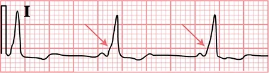
- Khoảng PQ ngắn lại < 0,12 s
- Sóng delta (xuất hiện do một phần tâm thất được khử cực sớm qua bó Kent)
- Phức bộ QRS giãn rộng > 0,11 s (phức bộ QRS giãn rộng là do sóng delta)
- Sóng Q bệnh lý ở các chuyển đạo dưới
(II, III, aVF)- 70% bệnh nhân hội chứng WPW có sóng Q bệnh lý, sóng này có thể không phản ánh nhồi máu cơ tim thành dưới
- Sóng R cao ở các chuyển đạo trước tim
- Các dấu hiệu ECG của hội chứng WPW chỉ hiện diện
- Khi dẫn truyền xuôi chiều qua bó Kent nhanh hơn dẫn truyền qua bộ nối nhĩ – thất
Hội chứng WPW
- Khoảng PQ ngắn lại (< 0,12 s)
- Sóng delta
- Phức bộ QRS giãn rộng (> 0,11 s)
Định khu bó Kent
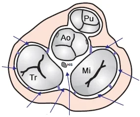
- Bó Kent thường gặp nhất ở:
- Tâm nhĩ trái: 46-60%
- Tâm nhĩ phải: 13-21%
- Sau vách: 25%
- Trước vách: 2%
- Thuật toán d'Avila
- Có thể định khu bó Kent với độ chính xác 90%
- Vào 8 vị trí giải phẫu
- Để định khu bó Kent ở tâm nhĩ trái và tâm nhĩ phải
- Dùng các chuyển đạo V1 và V6
- Hội chứng WPW type A (tâm nhĩ trái)
- Bó Kent nối tâm nhĩ trái - tâm thất trái
- Hội chứng WPW type B (tâm nhĩ phải)
- Bó Kent nối tâm nhĩ phải - tâm thất phải
Hội chứng WPW type A (đường dẫn truyền bên trái)
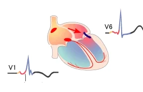
- Bó Kent nối tâm nhĩ trái + tâm thất trái
- Xung động tiền kích thích tâm thất trái, rồi lan ra toàn bộ cơ tim
- QRS giống block nhánh phải
- Phức bộ QRS dương ở V1
Hội chứng WPW type B (đường dẫn truyền bên phải)

- Bó Kent nối tâm nhĩ phải + tâm thất phải
- Xung động tiền kích thích tâm thất phải,
rồi lan ra toàn bộ cơ tim - Phức bộ QRS giống block nhánh trái
- Phức bộ QRS âm ở V1
Chẩn đoán phân biệt hội chứng WPW
- Dày thất trái
- Biên độ QRS cao
- Dày thất phải
- Biên độ QRS cao
- Block nhánh phải
- QRS rộng, R chiếm ưu thế ở V1
- Block nhánh trái
- QRS rộng, R chiếm ưu thế ở V6
- Nhồi máu cơ tim thành dưới cũ
- Q bệnh lý ở các chuyển đạo dưới (II, III, aVF)
Bó Kent hiện rõ (manifest)
- Dẫn truyền xuôi chiều qua bó Kent nhanh hơn dẫn truyền qua nút nhĩ – thất
- Sóng delta xuất hiện trên ECG
- 25% bệnh nhân có dẫn truyền xuôi chiều thì bị block dẫn truyền ngược chiều
- AVRT nghịch chiều (antidromic) có thể xuất hiện
- AVRT xuôi chiều (orthodromic) không thể xuất hiện
- 10% bệnh nhân có bó Kent còn có thêm một đường dẫn truyền phụ thứ hai
- Đường này thường không hoạt động
- Mức độ tiền kích thích
- Phức bộ QRS càng rộng (sóng delta), phần tâm thất bị tiền kích thích càng lớn
- Mức tiền kích thích (độ rộng QRS) phụ thuộc vào tần số tim
- Khi tần số tim tăng, dẫn truyền qua bộ nối nhĩ – thất nhanh lên và phức bộ QRS hẹp lại
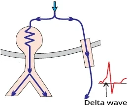
ECG (sóng delta)
- ECG cho thấy một sóng delta
- Vì xung động qua bó Kent bắt đầu khử cực tâm thất sớm hơn
- So với xung động qua bộ nối nhĩ – thất
Bó Kent tiềm ẩn (latent)
- Bó Kent có dẫn truyền xuôi chiều
- Tâm thất được khử cực đồng thời qua bộ nối nhĩ – thất và qua bó Kent
- Thời gian 1 = Thời gian 2
- Không có sóng delta trên ECG
- Sóng delta bị che lấp bởi phức bộ QRS
- ECG cho thấy nhịp xoang với phức bộ QRS hẹp
- Bó Kent là tiềm ẩn nếu nó nằm ở thành bên tâm nhĩ trái
- Vì xung động từ nút xoang phải đi một đường dài mới tới được bó Kent
- Bó Kent tiềm ẩn được bộc lộ bằng tạo nhịp nhĩ ở tâm nhĩ trái (sóng delta xuất hiện trên ECG)
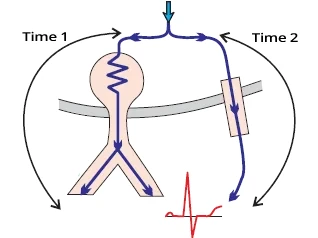
ECG (QRS hẹp, không có sóng delta)
- ECG cho thấy phức bộ QRS hẹp không có sóng delta
- Tâm thất được khử cực đồng thời qua bộ nối nhĩ – thất và qua bó Kent
- Sóng delta bị che lấp bởi phức bộ QRS hẹp
Dẫn truyền ẩn qua bó Kent
- Bó Kent có thể dẫn xung động theo cả chiều xuôi và chiều ngược, nhưng các xung động này bị block
- Vì bó Kent có thời kỳ trơ dài
- Bó Kent block 2 xung động ở giữa gây khởi động lại (reset)
- ECG cho thấy nhịp xoang với phức bộ QRS hẹp
- Vì bó Kent có thời kỳ trơ dài
- Đây là dẫn truyền ẩn (concealed conduction), vì nó không thấy được trên ECG trong điều kiện bình thường
- Dẫn truyền ngược chiều được bộc lộ trong cơn AVRT xuôi chiều
- Dẫn truyền xuôi chiều được bộc lộ trong rung nhĩ
- Đường dẫn truyền phụ lành tính
- Bó Kent có thời kỳ trơ dài được gọi là đường dẫn truyền phụ lành tính
- Vì trong cơn nhịp nhanh trên thất (thường gặp nhất là rung nhĩ), nó hoạt động như một màng lọc xung động
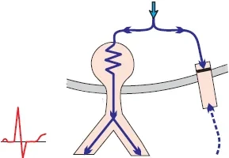
ECG (QRS hẹp, không có sóng delta)
- ECG cho thấy phức bộ QRS hẹp không có sóng delta
- Vì tâm thất chỉ được khử cực qua bộ nối nhĩ – thất
- Xung động qua bó Kent bị block, và sóng delta không xuất hiện
- Hình ảnh ECG giống như trong trường hợp bó Kent tiềm ẩn
AVRT xuôi chiều (orthodromic)
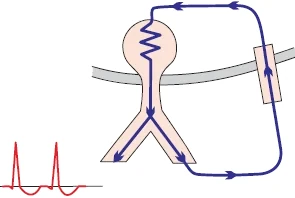
- Nhịp nhanh vào lại nhĩ – thất (AVRT) có vòng vào lại lớn (macro) giữa tâm nhĩ và tâm thất
- Xung động lưu hành trong vòng vào lại có thể được khởi phát bởi ngoại tâm thu thất hoặc ngoại tâm thu nhĩ
- Dựa theo chiều đi của xung động, phân biệt 2 thể AVRT:
- AVRT nghịch chiều (5% tổng số AVRT)
- AVRT xuôi chiều (95% tổng số AVRT), trong đó xung động lưu hành:
- Xuôi chiều qua bộ nối nhĩ – thất giống như trong nhịp xoang, do đó các phức bộ QRS hẹp
- Ngược chiều qua bó Kent, tâm nhĩ được khử cực qua bó Kent
- Sóng P nằm sau phức bộ QRS (thường bị ẩn trong sóng T)
ECG (QRS hẹp)
- AVRT xuôi chiều
- Các phức bộ QRS hẹp, không có sóng delta
- Tâm thất được khử cực qua bộ nối nhĩ – thất
- Tâm nhĩ được khử cực qua bó Kent
- Sóng P nằm sau phức bộ QRS (thường bị ẩn trong sóng T)
AVRT nghịch chiều (antidromic)
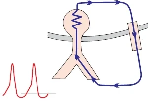
- AVRT nghịch chiều (5% tổng số AVRT)
- Xung động lưu hành trong vòng vào lại có thể được khởi phát bởi ngoại tâm thu thất hoặc ngoại tâm thu nhĩ
- Xung động lưu hành:
- Xuôi chiều qua bó Kent
- Tâm thất được khử cực qua bó Kent, dẫn tới các phức bộ QRS rộng (có sóng delta)
- Ngược chiều qua bộ nối nhĩ – thất
- Tâm nhĩ được khử cực qua bộ nối nhĩ – thất. Sóng P nằm trước phức bộ QRS (thường bị ẩn trong sóng T)
- Xuôi chiều qua bó Kent
ECG (QRS rộng và sóng delta)
- AVRT nghịch chiều
- Các phức bộ QRS rộng, có sóng delta
- Tâm thất được khử cực qua bó Kent
- Tâm nhĩ được khử cực qua bộ nối nhĩ – thất
- Sóng P nằm trước phức bộ QRS (thường bị ẩn trong sóng T)
Rung nhĩ và hội chứng WPW
- 20% bệnh nhân hội chứng WPW có rung nhĩ
- Trong rung nhĩ, có rất nhiều vòng vào lại nhỏ (micro re-entry) trong tâm nhĩ
- Chúng phát xung động không đều với tần số 350-600/phút.
- Bó Kent không lọc xung động từ tâm nhĩ như bộ nối nhĩ – thất
- Tâm thất có thể đạt tần số tới 200-300/phút., dẫn tới rung thất
- Tâm thất chủ yếu được khử cực không đều qua bó Kent (các phức bộ QRS rộng)
- Ngắt quãng, tâm thất cũng được khử cực không đều qua bộ nối nhĩ – thất (các phức bộ QRS hẹp)
- Có thể dẫn tới
- Nhát bóp hòa hợp (fusion beat) — tâm thất được khử cực đồng thời qua bộ nối nhĩ – thất và bó Kent
- Nhát bóp bắt được (capture beat) — tâm thất chỉ được khử cực qua bộ nối nhĩ – thất
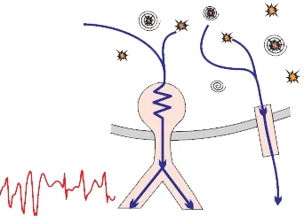
ECG (QRS rộng và sóng delta)
- Rung nhĩ trên nền hội chứng WPW
- Tâm thất chủ yếu được khử cực qua đường dẫn truyền phụ
- Xuất hiện các phức bộ QRS rộng (do sóng delta)
- Có thể đạt tần số tới 200-300/phút.
- Nếu xung động ngắt quãng đi qua bộ nối nhĩ – thất, có thể dẫn tới
- Nhát bóp hòa hợp (fusion beat)
- Nhát bóp bắt được (capture beat)
Đường dẫn truyền phụ ác tính
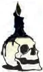
- Có thời kỳ trơ ngắn, cho phép nó dẫn xung động với tần số cao
- Đường dẫn truyền phụ ác tính trong nhịp nhanh trên thất
- Dẫn xung động xuống tâm thất với tần số 200-300/phút.
- Dần dẫn tới rung thất và tim ngừng hoạt động như một cái bơm
- Bệnh nhân có hội chứng WPW đối diện nguy cơ từ bất kỳ nhịp nhanh trên thất nào, thường gặp nhất là
- Rung nhĩ
- Cuồng nhĩ
Đường dẫn truyền phụ lành tính
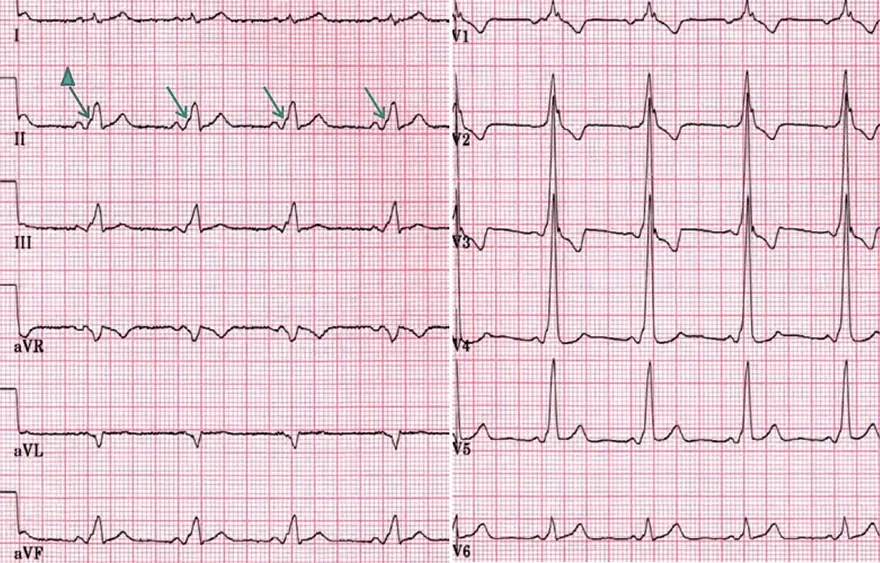
- Có thời kỳ trơ dài, nên không thể dẫn xung động xuống tâm thất với tần số cao
- Đường này không hoạt động trong nhịp xoang
- Đó là dẫn truyền ẩn (concealed conduction), vì đường dẫn truyền phụ block xung động thứ hai trong thời kỳ trơ và khởi động lại (reset)
- Không có dấu hiệu tiền kích thích trên ECG
- Đường dẫn truyền phụ trở nên rõ ràng trong cơn nhịp nhanh
- Khi xuất hiện nhịp nhanh vào lại nhĩ – thất
- Trong nhịp xoang, sóng delta có thể xuất hiện ngắt quãng (nếu là hội chứng WPW)
- Khi một xung động trên thất đi xuống tâm thất qua đường dẫn truyền phụ ngoài thời kỳ trơ
Hội chứng WPW (type A)
- Nhịp xoang
- Tần số tim 75/phút.
- Khoảng PQ ngắn lại < 0,12 s
- Sóng delta và QRS rộng khoảng 0,18 s
- Phức bộ QRS trông giống chữ delta của Hy Lạp
- QRS và sóng delta chiếm ưu thế (V1)
- Điều này chỉ ra bó Kent nằm ở tâm nhĩ trái
- Sóng R chiếm ưu thế (V1-V3)
- Đây không phải dày thất phải
- R chiếm ưu thế (V4-6)
- Đây không phải dày thất trái
- Sóng Q bệnh lý (aVL)
- Đây không phải nhồi máu thành bên cũ
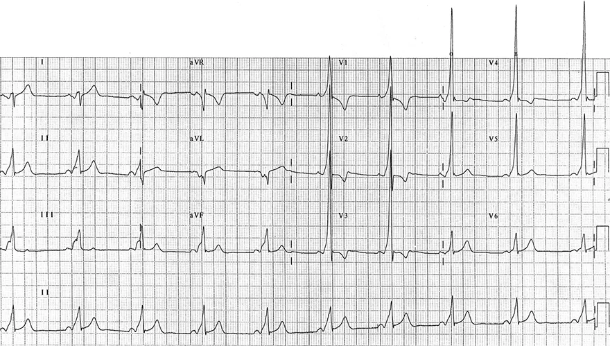
Hội chứng WPW (type A)
- Khoảng PQ ngắn lại < 0,12 s
- Sóng delta và QRS rộng khoảng 0,15 s
- QRS và sóng delta chiếm ưu thế (V1)
- Điều này chỉ ra bó Kent nằm ở tâm nhĩ trái
- Sóng R chiếm ưu thế ở V1-V3
- Đây không phải dày thất phải
- Sóng Q bệnh lý (aVL)
- Đây không phải nhồi máu thành bên cũ
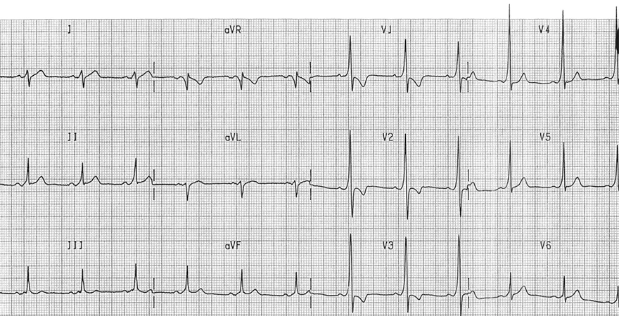
Hội chứng WPW (type A)
- Khoảng PQ ngắn lại < 0,12 s
- Sóng delta và QRS giãn rộng khoảng 0,15 s
- QRS và sóng delta chiếm ưu thế (V1)
- Điều này chỉ ra bó Kent nằm ở tâm nhĩ trái
- Sóng R chiếm ưu thế ở V1-V3
- Đây không phải dày thất phải
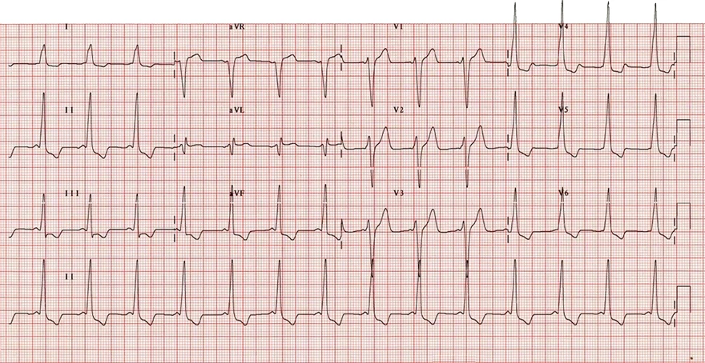
Hội chứng WPW (type B)
- Khoảng PQ ngắn lại < 0,12 s
- Sóng delta và QRS giãn rộng khoảng 0,15 s
- QRS âm (V1)
- Điều này chỉ ra bó Kent nằm ở tâm nhĩ phải
- Sóng R chiếm ưu thế ở V4-V6, không phải do:
- Dày thất trái
- Block nhánh Tawara trái
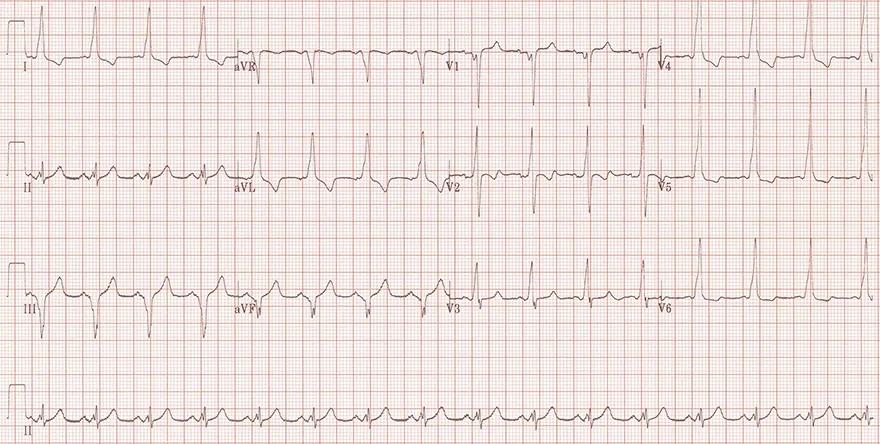
Hội chứng WPW (type B)
- Khoảng PQ ngắn lại < 0,12 s
- Sóng delta và QRS giãn rộng khoảng 0,15 s
- QRS âm (V1)
- Điều này chỉ ra bó Kent nằm ở tâm nhĩ phải
- Sóng R chiếm ưu thế ở V4-V6, không phải do:
- Dày thất trái
- Block nhánh Tawara trái
- Sóng Q bệnh lý (III và aVF)
- Không phải do nhồi máu thành dưới
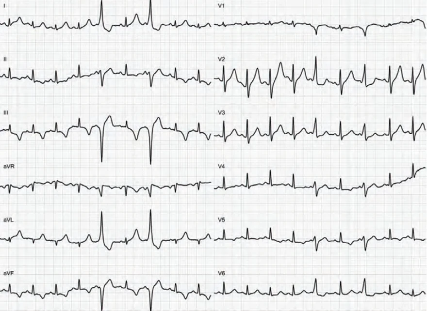
Hội chứng WPW ngắt quãng (type B)
- ECG cho thấy nhịp xoang
- Trong nhịp xoang, bó Kent block các xung động
- Xung động đi xuống tâm thất chỉ qua bộ nối nhĩ – thất
- Ngắt quãng, xuất hiện các phức bộ QRS giãn rộng kèm sóng delta
- Vì xung động đi xuống tâm thất qua bó Kent
- Đây không phải ngoại tâm thu thất
- Bó Kent nằm ở tâm nhĩ phải
- Các phức bộ QRS giãn rộng kèm sóng delta âm ở chuyển đạo V1
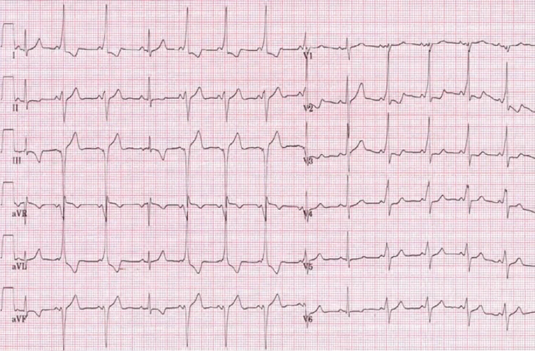
Hội chứng WPW ngắt quãng (type B)
- Trên ECG có sự xen kẽ giữa hội chứng WPW và nhịp xoang
- Chủ yếu, ta thấy các phức bộ QRS giãn rộng kèm sóng delta (hội chứng WPW)
- Bó Kent nằm ở tâm nhĩ phải
- Các phức bộ QRS giãn rộng kèm sóng delta âm ở chuyển đạo V1
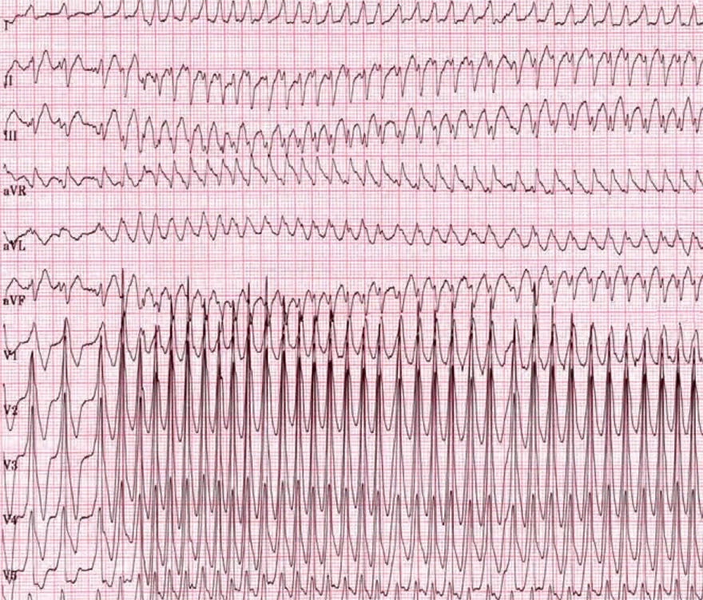
Hội chứng WPW và rung nhĩ
- Các phức bộ QRS giãn rộng kèm sóng delta
- Tần số tim không đều, khoảng 300/phút.
- Bệnh nhân có rung nhĩ
- Xung động đi xuống tâm thất qua bó Kent
- Bệnh nhân có một đường dẫn truyền phụ ác tính
- Vì đường này đã dẫn xung động với tần số 300/phút.
- Rung thất nhanh chóng xuất hiện
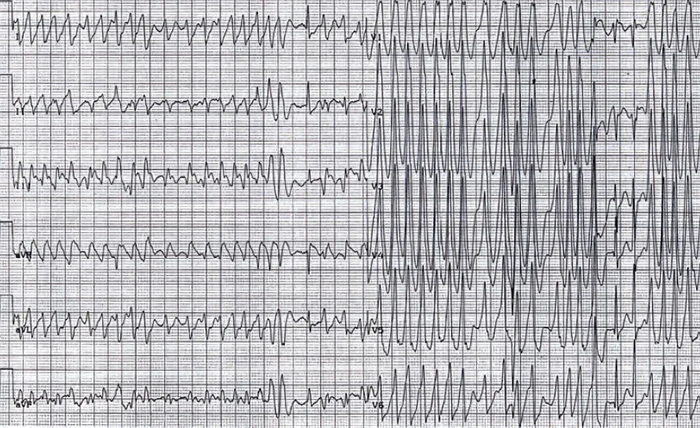
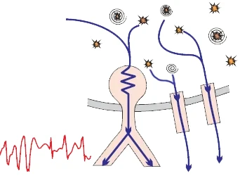
Hội chứng WPW và rung nhĩ
- Các phức bộ QRS giãn rộng kèm sóng delta
- Tần số tim không đều, khoảng 300/phút.
- Hình dạng các phức bộ QRS thay đổi
- Ở giữa bản ghi ECG, có vẻ xuất hiện một nhát bóp bắt được (capture beat)
- Tâm thất chỉ được khử cực qua bộ nối nhĩ – thất
- Ở giữa bản ghi ECG, có vẻ xuất hiện một nhát bóp bắt được (capture beat)
- Ta thấy 2 phức bộ QRS khác nhau kèm sóng delta (chuyển đạo II)
- Bệnh nhân có 2 đường dẫn truyền phụ (2 bó Kent)
- Xung động luân phiên đi xuống tâm thất qua hai đường này
Phần 3. Định khu bó Kent trong hội chứng WPW
Tiêu chuẩn (thuật toán) định khu bó Kent (hội chứng WPW)
Hội chứng WPW
- Trong hội chứng WPW, có một đường dẫn truyền phụ (accessory pathway — bó Kent)
- Bó Kent
- Gặp ở khoảng 0,5% dân số (là đường dẫn truyền phụ thường gặp nhất)
- Nối tâm nhĩ với tâm thất (Atrio-Ventricular bypass — đường vòng nhĩ – thất)
- Khử cực (tiền kích thích) một tâm thất sớm hơn so với bộ nối nhĩ – thất (AV junction)
- Tạo ra sóng delta trên ECG
- Sóng delta
- Làm rộng phức bộ QRS
- Làm ngắn khoảng PQ
ECG và hội chứng WPW
- Khoảng PQ ngắn lại (< 0,12 s)
- Sóng delta
- Phức bộ QRS rộng (> 0,11 s)
Định khu bó Kent
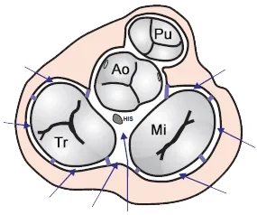
- Bó Kent thường gặp nhất ở:
- Tâm nhĩ trái: 46-60%
- Tâm nhĩ phải: 13-21%
- Sau vách: 25%
- Trước vách: 2%
- Để định khu bó Kent về tâm nhĩ trái và tâm nhĩ phải:
- Dùng các chuyển đạo V1 và V6
- Hội chứng WPW type A (tâm nhĩ trái)
- Bó Kent nối tâm nhĩ trái với tâm thất trái
- Hội chứng WPW type B (tâm nhĩ phải)
- Bó Kent nối tâm nhĩ phải với tâm thất phải
Hội chứng WPW type A (tâm nhĩ trái)
- Bó Kent nối tâm nhĩ trái + tâm thất trái
- Xung động tiền kích thích tâm thất trái,
rồi lan ra toàn bộ cơ tim - QRS giống block nhánh Tawara phải
- Phức bộ QRS dương ở V1
Hội chứng WPW type B (tâm nhĩ phải)
- Bó Kent nối tâm nhĩ phải + tâm thất phải
- Xung động tiền kích thích tâm thất phải,
rồi lan ra toàn bộ cơ tim - QRS giống block nhánh Tawara trái
- Phức bộ QRS âm ở V1
Thuật toán d'Avila
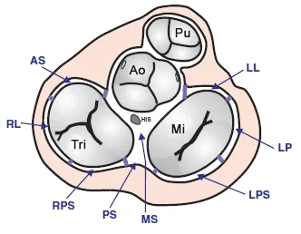
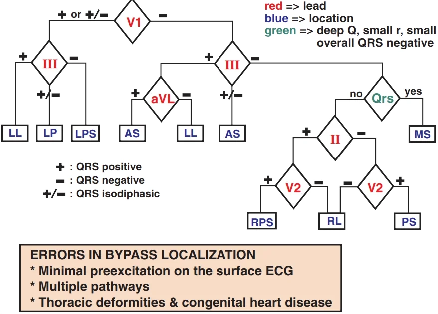
- Thuật toán được công bố năm 1995
- Một thuật toán nổi tiếng khác là thuật toán Arruda
- Bó Kent có thể được định khu với độ chính xác 90%
- Kém chính xác hơn khi có:
- 2 đường dẫn truyền phụ
- Biến dạng lồng ngực
- Bệnh tim bẩm sinh
- Kém chính xác hơn khi có:
- Việc đánh giá dựa trên hình dạng phức bộ QRS ở 5 chuyển đạo ECG
- Bó Kent có thể được định khu vào 8 vùng giải phẫu:
- LL: thành bên trái (Left Lateral)
- LP: sau trái (Left Posterior)
- LPS: sau vách trái (Left Postero-Septal)
- PS: sau vách (Postero-Septal)
- RPS: sau vách phải (Right Postero-Septal)
- RL: thành bên phải (Right-Lateral)
- AS: trước vách (Antero-Septal)
- MS: giữa vách (Mid-Septal)
- Tr: van ba lá (Tricuspid Valve)
- Pu: van động mạch phổi (Pulmonary Valve)
- Ao: van động mạch chủ (Aortic Valve)
- Mi: van hai lá (Mitral Valve)
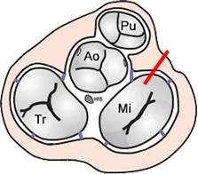
Hội chứng WPW
- Khoảng PQ ngắn lại < 0,12 s
- Sóng delta và QRS rộng khoảng 0,18 s
- Phức bộ QRS trong hội chứng WPW trông giống chữ delta của Hy Lạp
- Bó Kent nằm ở thành bên trái
- V1: QRS dương
- III: QRS dương
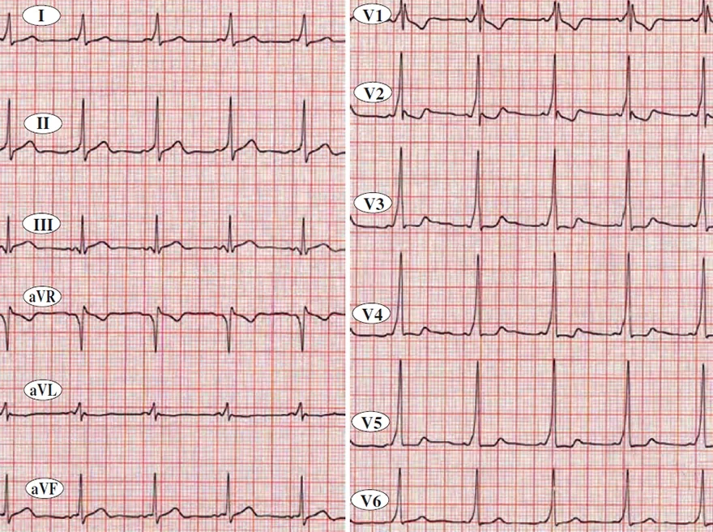
Hội chứng WPW
- Hội chứng WPW
- Bó Kent nằm ở thành bên trái
- V1: QRS dương
- III: QRS dương
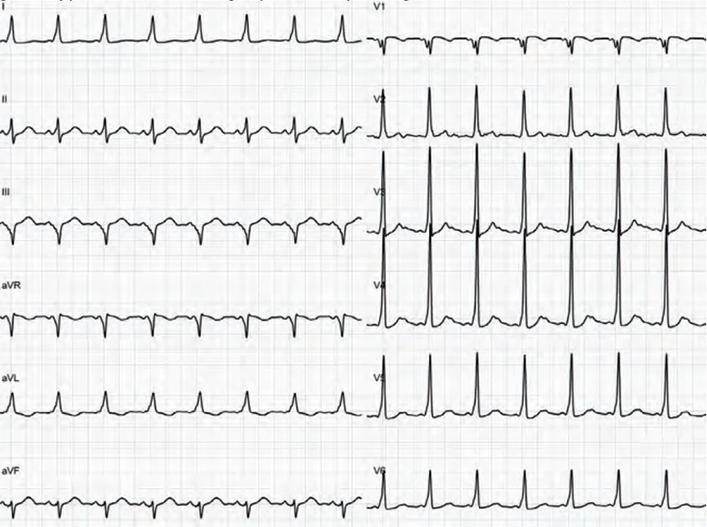
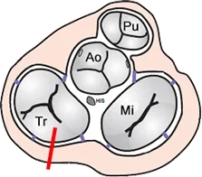
Hội chứng WPW
- Bó Kent nằm ở sau vách phải
- V1: QRS âm
- III: QRS âm
- Không xác định được hình dạng QRS
- II: QRS dương
- V2: QRS dương
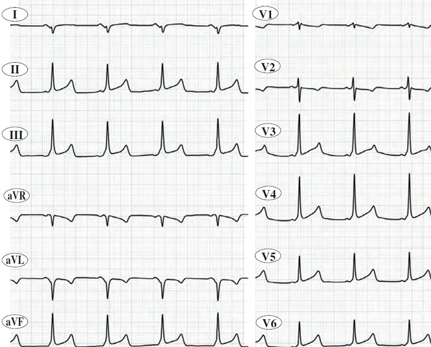
Hội chứng WPW
- Bó Kent nằm ở thành bên trái
- V1: QRS âm
- III: QRS dương
- aVL: QRS âm
- Sóng Q bệnh lý ở các chuyển đạo bên (I, aVL)
- Chỉ ra hội chứng WPW, không phải nhồi máu thành bên cũ
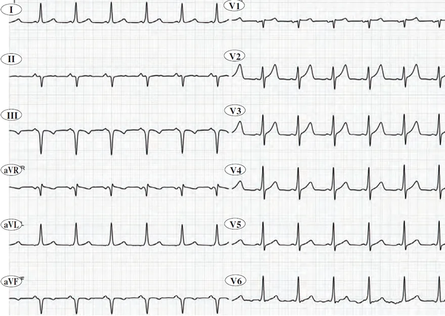
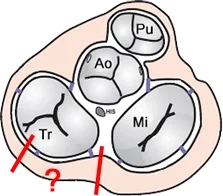
Hội chứng WPW
- Bó Kent nằm ở
- Thành bên phải
- Hoặc sau vách
- V1: QRS âm
- III: QRS âm
- Không xác định được hình dạng QRS
- II: QRS âm
- V2: hai pha
- Không thể xác định chính xác là dương hay âm
- Bó Kent nằm ở một trong hai vị trí
- Thành bên phải
- Sau vách
- Sóng Q bệnh lý ở các chuyển đạo dưới (II, III, aVF)
- Chỉ ra hội chứng WPW, không phải nhồi máu thành dưới cũ
Phần 4. Hội chứng Lown-Ganong-Levine (LGL)
Hội chứng Lown Ganong Levine (LGL), hội chứng PQ ngắn, hội chứng Clerc Levy Cristesco (CLC)
Các đường dẫn truyền phụ
- Về mặt sinh lý, tâm nhĩ được cách điện với tâm thất
- Kết nối điện duy nhất là bộ nối nhĩ – thất (AV junction)
- Nếu bộ nối nhĩ – thất bị gián đoạn, xuất hiện block nhĩ – thất độ III (cách điện hoàn toàn tâm nhĩ với tâm thất)
- 0,5% dân số có thêm một đường dẫn truyền phụ (accessory pathway) bên cạnh bộ nối nhĩ – thất
- Do đó, tâm nhĩ và tâm thất được kết nối về điện qua hai đường:
- Bộ nối nhĩ – thất
- Đường dẫn truyền phụ
- 10% bệnh nhân có đường dẫn truyền phụ còn có thêm một đường dẫn truyền phụ thứ hai
- Đường này thường không hoạt động
- Do đó, tâm nhĩ và tâm thất được kết nối về điện qua hai đường:
- Dựa theo vị trí, có ba đường dẫn truyền phụ chính:
- Bó Kent
- Nối tâm nhĩ với tâm thất
- (Atrio-Ventricular bypass — đường vòng nhĩ – thất)
- Tạo ra hội chứng WPW
- Bó James
- Nối tâm nhĩ với bó His
- (Atrio-Hisian bypass — đường vòng nhĩ – His)
- Tạo ra hội chứng LGL
- Bó Mahaim
- Nối bộ nối nhĩ – thất với tâm thất
- (Nodo-Ventricular bypass — đường vòng nút – thất)
- Tạo ra hội chứng Mahaim
- Bó Kent
Hội chứng Lown-Ganong-Levine (LGL)
- Bó James
- Nối tâm nhĩ với bó His (Atrio-Hisian bypass — đường vòng nhĩ – His)
- Không làm chậm dẫn truyền xung động như nút nhĩ – thất
- Bó James có dẫn truyền không giảm dần (non-decremental conduction — không bị làm chậm)
- Bộ nối nhĩ – thất có dẫn truyền giảm dần (decremental conduction — có làm chậm)
- Khoảng PQ ngắn lại (< 0,12 s)
- Vì xung động tới tâm thất mà không bị làm chậm (đi vòng qua nút nhĩ – thất)
Hội chứng LGL và khoảng PQ ngắn lại
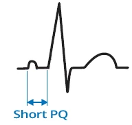
- Bó James
- Nối tâm nhĩ với bó His, đi vòng qua nút nhĩ – thất
- (Atrio-Hisian bypass — đường vòng nhĩ – His)
- Khoảng PQ ngắn lại (< 0,12 s)
- Vì xung động tới tâm thất mà không bị làm chậm (đi vòng qua nút nhĩ – thất)
- Phức bộ QRS hẹp
- Tâm thất được khử cực qua hệ thống dẫn truyền (như trong nhịp xoang)
- Có thể dẫn tới nhịp nhanh vào lại nhĩ – thất (AVRT)
- Cùng một hình ảnh ECG này còn gặp trong dẫn truyền bộ nối tăng nhanh (accelerated junctional conduction)
Dẫn truyền nhĩ – thất tăng nhanh và khoảng PQ ngắn lại
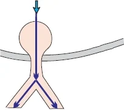
- Dẫn truyền qua nút nhĩ – thất tăng cường (enhanced atrioventricular nodal conduction — EAVNC)
- Bộ nối nhĩ – thất có dẫn truyền không giảm dần
- Dẫn truyền không bị làm chậm
- Do đó tâm thất được khử cực sớm hơn
- Trên ECG cũng có khoảng PQ ngắn lại (< 0,12 s)
- Bệnh nhân không có đường dẫn truyền phụ: bó James
- Nhịp nhanh vào lại nhĩ – thất không thể xuất hiện (AVRT)
- Hội chứng LGL và dẫn truyền nhĩ – thất tăng nhanh đều tạo ra khoảng PQ ngắn lại (< 0,12 s)
- Khoảng 30% bệnh nhân có khoảng PQ ngắn lại là do dẫn truyền nhĩ – thất tăng nhanh
- Để chẩn đoán phân biệt, dùng thăm dò điện sinh lý
ECG và hội chứng LGL
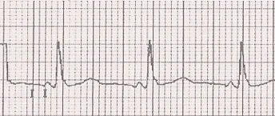
- Khoảng PQ ngắn lại (< 0,12 s)
- Các phức bộ QRS hẹp (< 0,12 s)
- Đôi khi khoảng PQ ngắn lại được đánh giá như sau:
- Dẫn truyền nhĩ – thất tăng nhanh:
- Khoảng PQ ngắn lại + phức bộ QRS bình thường
- Hội chứng LGL:
- Khoảng PQ ngắn lại + phức bộ QRS bình thường + AVRT thường xuyên
- Tâm nhĩ và tâm thất được kết nối qua 2 đường
- Do đó nhịp nhanh vào lại nhĩ – thất (AVRT) có thể xuất hiện
- Khoảng PQ ngắn lại + phức bộ QRS bình thường + AVRT thường xuyên
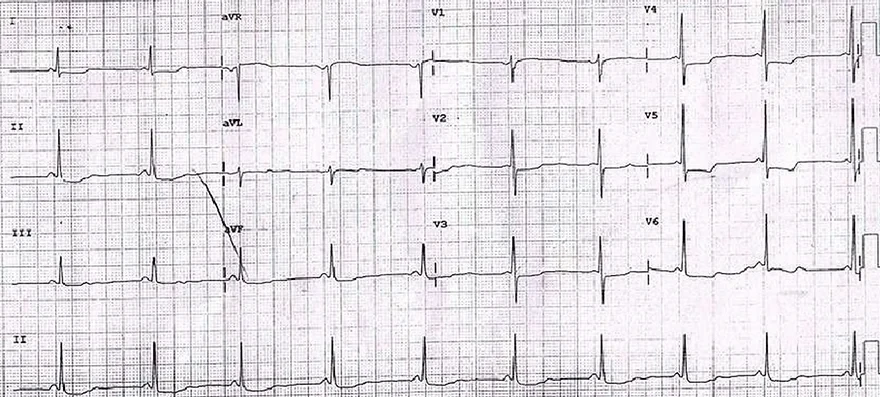
Hội chứng LGL
- Khoảng PQ ngắn lại (< 0,12 s)
- Phức bộ QRS hẹp (< 0,12 s)
- Cũng có thể là do dẫn truyền nhĩ – thất tăng nhanh
- Chẩn đoán phân biệt được thực hiện bằng thăm dò điện sinh lý
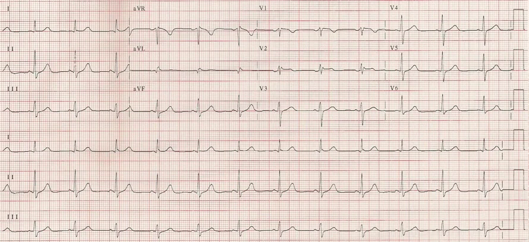
Hội chứng LGL
- Khoảng PQ ngắn lại (< 0,12 s)
- Phức bộ QRS hẹp (< 0,12 s)
- Cũng có thể là do dẫn truyền nhĩ – thất tăng nhanh
- Chẩn đoán phân biệt được thực hiện bằng thăm dò điện sinh lý
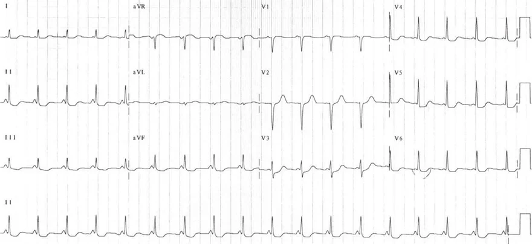
Hội chứng LGL
- Khoảng PQ ngắn lại (< 0,12 s)
- Phức bộ QRS hẹp (< 0,12 s)
- Cũng có thể là do dẫn truyền nhĩ – thất tăng nhanh
- Chẩn đoán phân biệt được thực hiện bằng thăm dò điện sinh lý
Phần 5. Hội chứng Mahaim
Hội chứng Mahaim
Các đường dẫn truyền phụ
- Về mặt sinh lý, tâm nhĩ và tâm thất được cách điện với nhau
- Kết nối điện duy nhất là bộ nối nhĩ – thất (AV junction)
- Nếu bộ nối nhĩ – thất bị gián đoạn, xuất hiện block nhĩ – thất độ III (cách điện hoàn toàn tâm nhĩ với tâm thất)
- 0,5% dân số có thêm một đường dẫn truyền phụ (accessory pathway) bên cạnh bộ nối nhĩ – thất
- Tâm nhĩ và tâm thất được kết nối về điện qua hai đường:
- Bộ nối nhĩ – thất
- Đường dẫn truyền phụ
- 10% bệnh nhân có đường dẫn truyền phụ còn có thêm một đường dẫn truyền phụ thứ hai
- Đường này thường không hoạt động
- Tâm nhĩ và tâm thất được kết nối về điện qua hai đường:
- Dựa theo vị trí, có ba đường dẫn truyền phụ chính:
- Bó Kent
- Nối tâm nhĩ với tâm thất
- (Atrio-Ventricular bypass — đường vòng nhĩ – thất)
- Tạo ra hội chứng WPW
- Bó James
- Nối tâm nhĩ với bó His
- (Atrio-Hisian bypass — đường vòng nhĩ – His)
- Tạo ra hội chứng LGL
- Bó Mahaim
- Nối bộ nối nhĩ – thất với tâm thất
- (Nodo-Ventricular bypass — đường vòng nút – thất)
- Tạo ra hội chứng Mahaim
- Bó Kent
Hội chứng Mahaim
- Bó Mahaim
- Nối bộ nối nhĩ – thất với tâm thất (Nodo-Ventricular bypass — đường vòng nút – thất)
- Không làm chậm dẫn truyền xung động như nút nhĩ – thất
- Bó Mahaim có dẫn truyền không giảm dần (non-decremental conduction — không bị làm chậm)
- Bộ nối nhĩ – thất có dẫn truyền giảm dần (decremental conduction — có làm chậm)
- Khoảng PQ bình thường (0,12 - 0,20 s)
- Xung động bị làm chậm ở nút nhĩ – thất rồi mới tiếp tục đi
- Hình thành sóng delta
- Tâm thất được khử cực sớm hơn qua bó Mahaim
- So với qua các nhánh Tawara
ECG và hội chứng Mahaim
- Khoảng PQ bình thường (0,12 - 0,20 s)
- Sóng delta
Hội chứng Mahaim
- Khoảng PQ bình thường (0,16 s)
- Sóng delta
- Phức bộ QRS rộng (> 0,12 s)
- Sợi Mahaim được xác nhận bằng thăm dò điện sinh lý
- ECG giống block nhánh trái
- Vì sợi Mahaim nằm ở thất phải
Nguồn tài liệu (Sources)
Nguồn: ECG BOOK — www.ecgbook.com
Năm bài gốc: /pre-excitation-syndrome · /wpw-syndrome · /kents-bundle-localization · /lgl-syndrome · /mahaim-syndrome
- ECG from Basics to Essentials Step by Step
- litfl.com
- ecgwaves.com
- metealpaslan.com
- medmastery.com
- uptodate.com
- ecgpedia.org
- wikipedia.org
- Strong Medicine
- Understanding Pacemakers